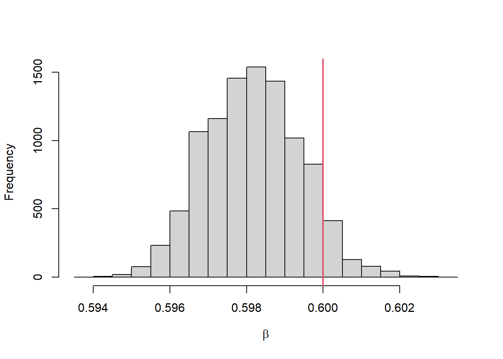

library(truncnorm) # draw or evaluate according to a truncated normal dist
pmc <- function (params = NULL,
x0 = NULL, # initial values
y = NULL, # observation
npart = 1000, # number of particles
niter = 10, # iterations
tend = 100, # to control the number of daily y to be fitted
dt = 0.1, # dt for the ODE integration
prior_mean = 0.5,
prior_sd = 2,
prior_lb = 0,
prior_ub = 2) {
# makes it easy to use truncated normal distribution
nstate <- length(x0) # number of state variables (i.e., S, I, R, CI)
# initial betas are sampled according to the prior distribution
beta0 <- rtruncnorm(npart, a=prior_lb, b=prior_ub, mean=prior_mean, sd=prior_sd)
beta <- matrix(NA, ncol=npart, nrow=niter) # to store the samples for beta
beta[1,] <- beta0 # the initial values for the first row
# proposal for the next iteration, which is then resampled according to the weight
sd = sd(beta[1,]) # scale for the proposal is adapted according to the current sample
beta[2,] = rtruncnorm(npart, a=prior_lb, b=prior_ub, mean=beta[1,], sd=sd)
lik <- matrix(NA, ncol = npart, nrow = niter) # likelihood
proposal_prob <- matrix(NA, ncol = npart, nrow = niter)
wt <- matrix(NA, ncol = npart, nrow = niter) # weight
W <- matrix(NA, ncol = npart, nrow = niter) # normalized weights
A <- matrix(NA, ncol = npart, nrow = niter) # Resample according to the normalized weight
# initial value
proposal_prob[1,] <- 1
wt[1,] <- 1 / npart # initial weights
W[1,] <- wt[1,]
for (i in 2:niter) {
# cat("i =", i, "\n")
# tend increases by 1 accounts for the initial values
X <- array(0, dim = c(npart, tend+1, nstate),
dimnames = list(NULL, NULL, names(x0)))
for (nm in names(x0)) {# starting values for each particle
X[, 1, nm] <- x0[[nm]]
}
# run process model (i.e., SIR model)
x_1_tend <-
process_model(params = params,
x = X,
dt = dt,
beta = beta[i,])
# calculate weights (likelihood)
lik[i,] <- assign_weights(x = x_1_tend, y = y[1:tend])
# normalize particle weights
proposal_prob[i,] = dtruncnorm(beta[i,], beta[i-1,], a=prior_lb, b=prior_ub, sd=sd)
prior_prob = dtruncnorm(beta[i,], a=prior_lb, b=prior_ub, mean=prior_mean, sd=prior_sd)
wt[i,] <- lik[i,] * prior_prob / proposal_prob[i,]
W[i,] <- wt[i,] / sum(wt[i,])
# resample particles by sampling parent particles according to normalized weights
A[i,] <- sample(1:npart, prob=W[i,], replace=T)
beta[i,] <- beta[i, A[i,]] # resampled beta according to the normalized weight
# sd for the proposal can be adapted in various other ways, but we use the sd of the current sample
sd = sd(beta[i,])
# generate proposals for the next iteration
if (i < niter) {
beta[i+1,] <- rtruncnorm(npart, a=prior_lb, b=prior_ub, mean=beta[i,], sd=sd)
}
} # end iteration
return (list(theta=beta, lik=lik, W=W, A=A))
}Population Monte Carlo 파퓰레이션 몬테카를로
Monte Carlo
R
parameter estimation
code
analysis
최근에 파티클필터링 (particle filtering; PF) 방법을 이용하여 \(\mathcal{R}_t\) 추정하는 과정에 대한 논문을 썼다. 그런데, 항상 의문이었던 것은 PF를 조금만 변형하면 감염병 모형의 감염속도 \(\beta=\mathcal{R}_0 \gamma\) 와 같은 time-invariant 파라미터를 추정할 수도 있지 않을까 하는 것이었다. Population Monte Carlo (PMC)가 바로 그 방법이었다.
이번 포스트에서는 SIR 모형의 모수 \(\beta\)를 PMC 방법으로 추정하여 보았다. 추정하는 PMC 알고리즘을 아래에 구현하였다. 전에 구현했던 particle filtering 와 유사하다. 즉 중요도 샘플링 (importance sampling)을 연속으로 구현하는 데 연속으로 샘플링 하기 위해 Markov Chain Monte Carlo 에서 사용하듯이 proposal 을 이용하여 다음 단계의 샘플을 만들고 중요도 샘플링을 이용하여 추정을 하는 것이다.
감염병 확산 과정을 나타내는 SIR 모형을 구현해보자. 파티클수에 따라 벡터형태로 SIR 모형을 구현하였다.
process_model <- function (params = NULL,
x = NULL,
dt = 0.1,
beta = NULL) {
S <- x[, 1, "S"] # a vector of initial S across the particles
I <- x[, 1, "I"] # a vector of initial I across the particles
R <- x[, 1, "R"] # a vector of initial S across the particles
len <- length(x[1,,"S"]) # length of model predictions (same as the data points) + 1 accounting for the initial values
N <- S + I + R
gamma <- params[["gamma"]]
for (j in 2:len) {
daily_infected <- 0 # to track the daily infection
for (i in seq(dt, 1, dt)) { # steps per day
FOI <- beta * I * S/N
S_to_I <- FOI * dt
I_to_R <- I * gamma * dt
S <- S - S_to_I
I <- I + S_to_I - I_to_R
R <- R + I_to_R
daily_infected <- daily_infected + S_to_I
}
x[, j, "S"] <- S
x[, j, "I"] <- I
x[, j, "R"] <- R
x[, j, "Inc"] <- daily_infected
}
return(x[, 2:len, "Inc"])
}모수 추정에 사용할 거짓 일별 감염자수를 만들어보자. 위에서 구현한 process_model에서 예측되는 일별 감염자 수를 평균으로 하는 푸아송 분포를 이용하여 만들었다.
parm = list(gamma=0.3) #
x0 = c(S=9990, I=10, R=0, Inc=0)#
tend = 50 # the number of observations
# tend + 1 to account for the initial values
X <- array(0, dim = c(1, tend+1, 4),
dimnames = list(NULL, NULL, names(x0)))
for (nm in names(x0)) {# starting values for each particle
X[, 1, nm] <- x0[[nm]]
}
truebeta <- 0.6 # true beta
pred <- process_model(params=parm, x=X, beta=truebeta)
y <- rpois(tend, lambda=round(pred)) # pmc 함수에 사용된 또 다른 함수 assign_weights를 아래에 구현하였다.
assign_weights <- function (x, y) {
di <- dim(x)
npart <- di[1] # number of particles
nobs <- di[2] # number of observations
loglik <- rep(NA, npart)
for (i in 1:npart) {
mean_case <- x[i,] # for the ith particle
expected_case <- pmax(0, mean_case)
obs_case <- round(y)
loglik[i] <- sum(dpois(obs_case, lambda=expected_case, log=T), na.rm=T)
}
return (exp(loglik)) # convert to normal probability
}PMC를 이용하여 모수 추정을 해보고 결과를 그림으로 나타내보자.
set.seed(45)
# gamma and x0 are set to the same as the model used to generate the data
parm = list(gamma=0.3)
x0 = c(S=9990, I=10, R=0, Inc=0)# initial condition
niter = 50
# out = pmc(params = parm, x0 = x0, y=y, npart=10000, niter=niter,
# tend = length(y), dt=0.1, prior_mean=0.5, prior_sd=0.1, prior_lb=0,
# prior_ub=2)
# saveRDS(out, "out_20230811.rds")
out <- readRDS("out_20230811.rds")
hist(out$theta[niter,], xlab=expression(beta), main="")
abline(v=truebeta, col=2, lwd=2)